Como cadastrar viagens, tours e serviços, montar a lista de passageiros, escalar os prestadores, conferir relatórios e notas fiscais e registrar pagamentos.
Acesse em sistema.645turismo.com.br/adminVersão de outubro de 2026
Manual do ADM
CONTEÚDOO que você encontra aqui
O capítulo 2 resume o caminho de um trabalho do cadastro ao pagamento. Os demais detalham cada tela.
01Acesso e perfis
02O caminho de um trabalho
03Tela Hoje
04Cadastrar uma viagem/tour
05Serviços e Consultoria
06Copiar um trabalho
07Página do trabalho e publicação
08Dias de trabalho e vagas
09Escalar prestadores
10Lista de passageiros
11Importar a planilha
12Prestadores: triagem e ficha
13Pré-cadastro em massa
14Conferência
15Pagamentos
16Atendimento e recados
17Conteúdo, Funções, Equipe e Diagnóstico
Manual do ADM
CAPÍTULO 01Acesso e perfis
O Painel ADM fica em sistema.645turismo.com.br/admin. Cada pessoa entra com o próprio e-mail e senha.
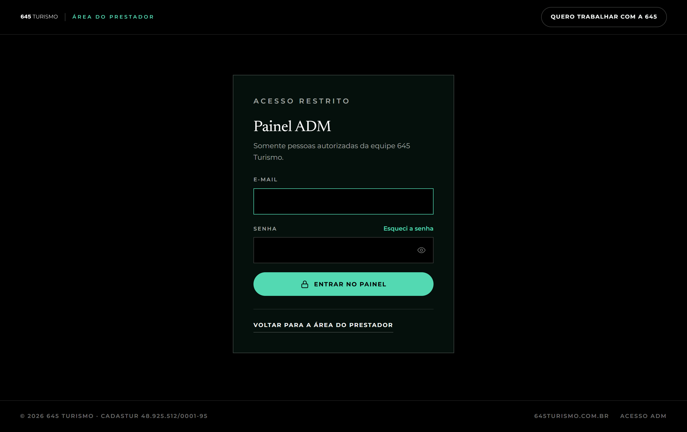
Entrada do Painel ADM
Esqueceu a senha? Use "Esqueci a senha": o link chega no e-mail cadastrado. Novas pessoas da equipe recebem um convite por e-mail para criar a senha (capítulo 17).
Perfil
O que acessa
Administrador
Tudo, inclusive Equipe (quem acessa o painel) e Diagnóstico
Conferência de relatórios e notas, pagamentos e atendimento
PrivacidadeCada prestador só vê os próprios dados e valores. Documentos, notas e comprovantes abrem por links únicos, que não podem ser adivinhados.
Manual do ADM
CAPÍTULO 02O caminho de um trabalho
Viagens, tours e serviços seguem a mesma ordem. A página do trabalho mostra cada etapa com um ✓ quando está pronta.
1Cadastrar2Dias de trabalho3Vagas por função4Passageiros*5Publicar
6Escalar prestadores7Acompanhar no dia8Conferir relatório e NF9Pagar10Concluir
* Só viagens e tours têm lista de passageiros. Serviços pulam essa etapa.
Etapa
Quem faz e onde
1 a 5
Coordenação, em Viagens/Tours ou Serviços (capítulos 4 a 11)
6 Escalar
Coordenação convida ou aloca; o prestador aceita pela Área do Prestador
Véspera
12 horas antes do início, o sistema manda a cada prestador confirmado um e-mail para conferir o portal, com o WhatsApp da coordenação
7 No dia
Prestador faz check-in, check-out e no-show e deixa comentários; a equipe acompanha ao vivo
8 Conferir
Prestador envia relatório e nota no Pós-viagem; coordenação ou financeiro aprovam em Conferência
9 Pagar
Financeiro registra o pagamento com comprovante em Pagamentos
10 Concluir
Coordenação marca o trabalho como concluído
Rascunho primeiroTrabalho novo nasce como rascunho: nenhum prestador vê até você publicar. Assim dá para montar tudo com calma.
Manual do ADM
CAPÍTULO 03Tela Hoje
A primeira tela depois de entrar mostra o que precisa de atenção agora.
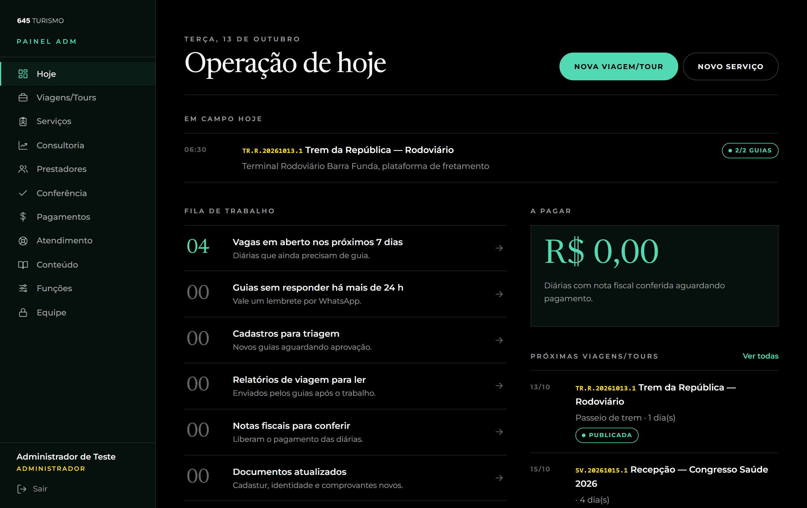
Operação de hoje
Em campo hoje: trabalhos do dia e o andamento da equipe.
Fila de trabalho: vagas em aberto nos próximos 7 dias, convites sem resposta há mais de 24 h, cadastros para triagem, relatórios e notas a conferir. Clique na linha para resolver.
A pagar: total com nota conferida, aguardando pagamento.
Botões Nova viagem/tour e Novo serviço.
Manual do ADM
CAPÍTULO 04Cadastrar uma viagem/tour
Em Viagens/Tours, clique em Nova viagem/tour. A lista mostra as viagens com filtros por situação, busca e o resumo de check-ins (feitos / faltam) do dia.
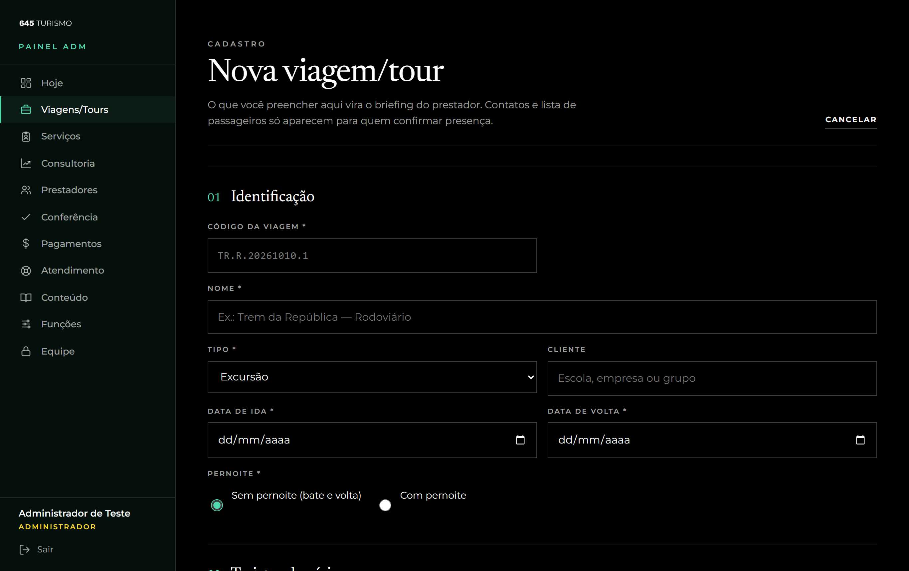
Identificação da nova viagem
Campos do cadastro
Bloco
O que preencher
Identificação
Código definido pela equipe, em texto livre (ex.: TR.R.20261010.1), que não pode repetir; nome, tipo, cliente, datas de ida e volta, com ou sem pernoite e hospedagem
Trajeto e horários
Origens (pontos de embarque, cada uma com horário opcional; use + Adicionar origem para mais), destino, ponto de encontro, link do mapa e os horários de apresentação, saída, saída do destino e chegada prevista
Veículo
Micro-ônibus 26, Ônibus Padrão 46 ou 50, Ônibus DD 64 ou Outro (descreva e informe os lugares). Informe as poltronas bloqueadas (ex.: 1, 2, 45-46). O mapa do carro é gerado disso
Equipe e contatos
Coordenação (o WhatsApp vai no lembrete de 12 h), motorista, guia local e outros contatos. Telefones ficam no formato (11) 95250-4927 e viram botões de WhatsApp
Grupo e roteiro
Perfil e idioma do grupo, passageiros previstos, uniforme, alimentação, roteiro, regras e observações
Nota fiscal
Prazos para enviar a nota e para pagar, e instruções da nota
Dias de trabalho
Deixe marcado "Criar um dia de trabalho para cada data" para gerar os dias automaticamente (depois ajuste dia a dia, capítulo 8)
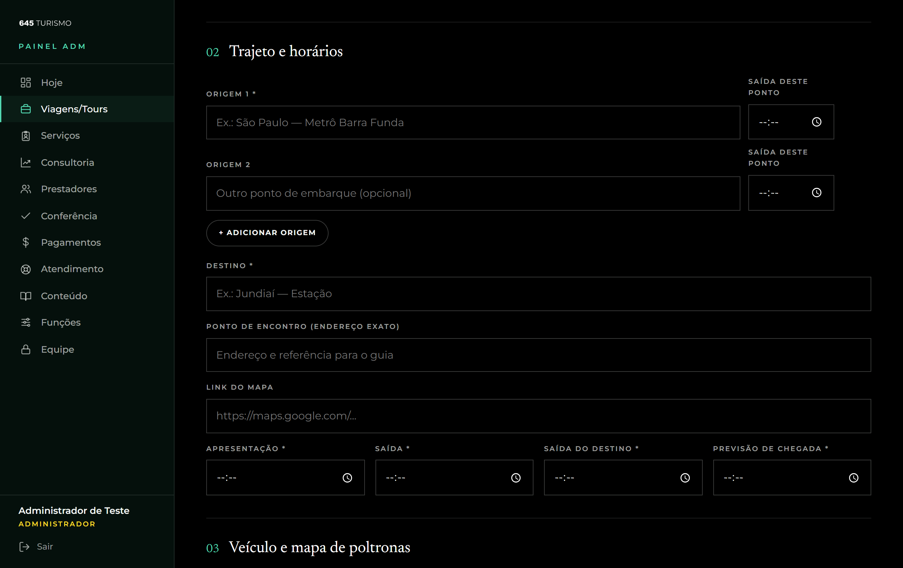
Origens e horários
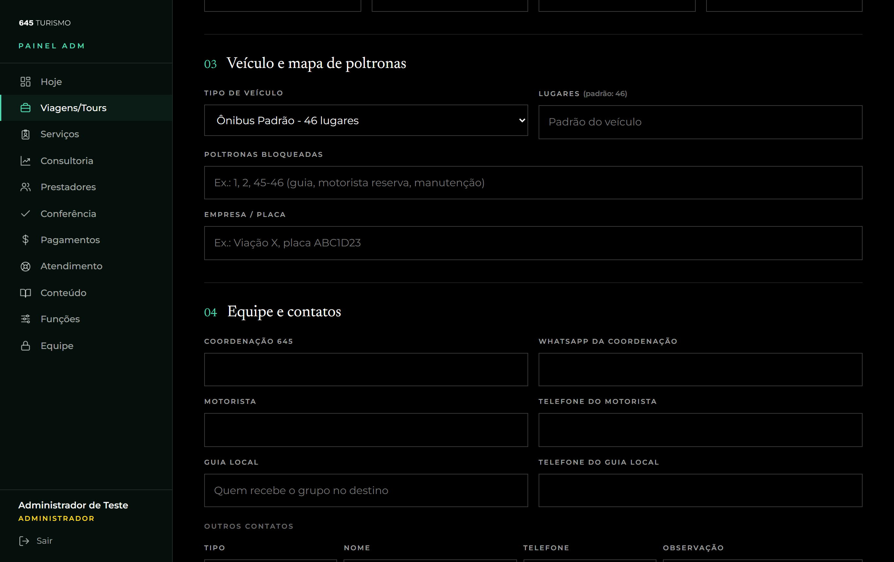
Veículo, poltronas e contatos
Clique em Criar como rascunho. Você vai para a página da viagem (capítulo 7).
Manual do ADM
CAPÍTULO 05Serviços e Consultoria
Serviços são os trabalhos sem lista de passageiros: recepção e credenciamento, serviço de bordo, eventos, feiras, receptivo e corporativo. Clique em Novo serviço.
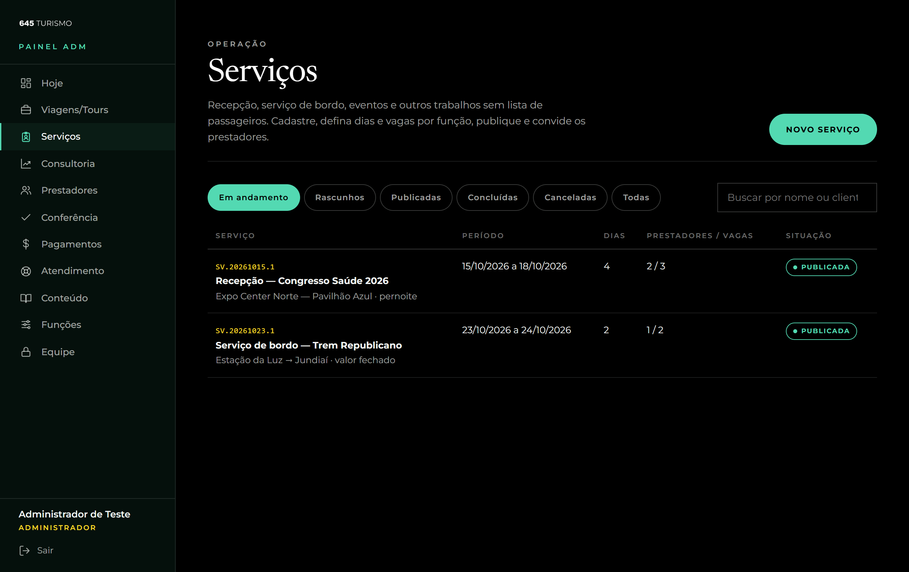
Lista de serviços
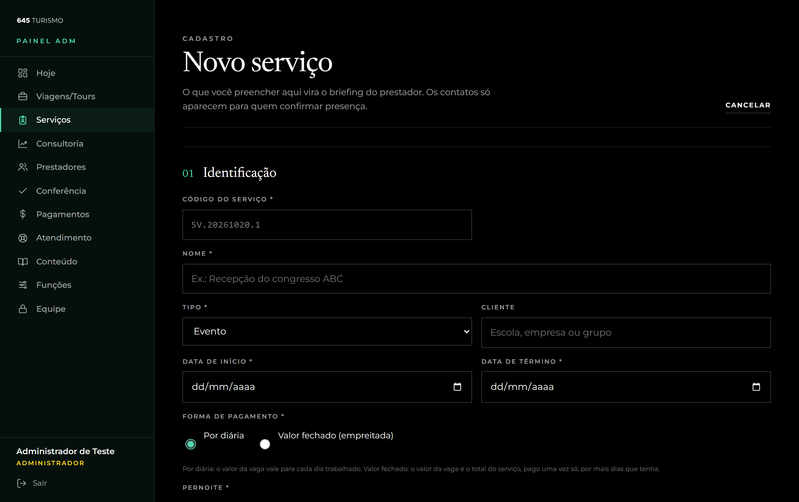
Identificação e forma de pagamento
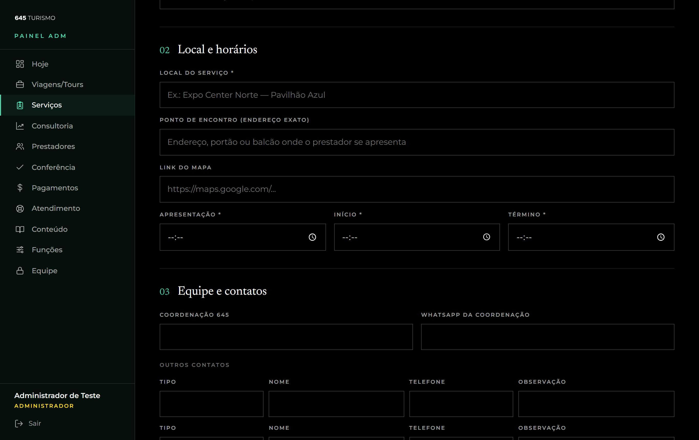
Local e horários do serviço
Campo
Como funciona
Tipo
Evento, recepção/credenciamento, serviço de bordo, receptivo/transfer, corporativo, feira/congresso ou outro
Forma de pagamento
Por diária: o valor da vaga vale para cada dia. Valor fechado (empreitada): o valor da vaga é o total do serviço e entra uma vez só para cada prestador, no primeiro dia escalado
Pernoite
Permitido; informe a hospedagem
Local e horários
Local do serviço, ponto de encontro, mapa e horários de apresentação, início e término (usados em todos os dias gerados)
Demais blocos
Coordenação e contatos, público, uniforme, alimentação, programação, regras e nota fiscal, como nas viagens
Serviço não tem veículo, origens, motorista nem lista de passageiros. Relatório, comentários, Pós-viagem e pagamento funcionam como nas viagens.
ConsultoriaA aba Consultoria, logo abaixo de Serviços, aparece no menu do painel e da Área do Prestador. Ela ainda não tem cadastro de trabalhos e mostra a lista vazia.
Manual do ADM
CAPÍTULO 06Copiar um trabalho
Para viagens e serviços que se repetem, copie um existente e mude só o que for diferente.
Abra o trabalho que servirá de modelo e clique em Copiar viagem (ou Copiar serviço).
O cadastro abre preenchido com os dados, origens e contatos. Informe o novo código e as novas datas.
Deixe marcado "Copiar as vagas por função e os valores" se forem iguais.
Clique em Criar como rascunho.
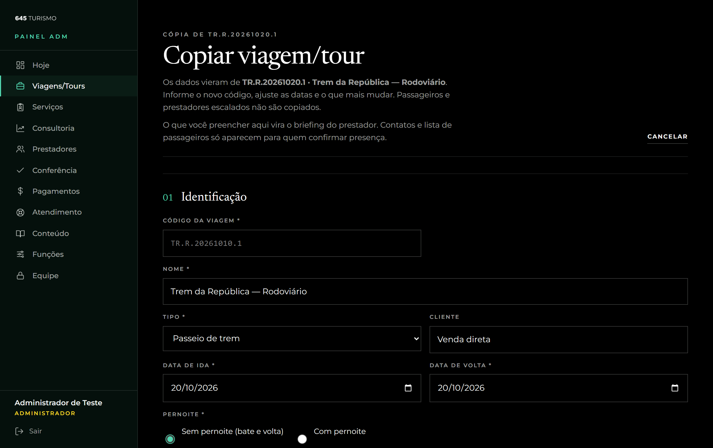
Cadastro aberto a partir de uma cópia
O que não é copiadoPassageiros e prestadores escalados ficam de fora: cada trabalho tem a sua lista e a sua escala.
Manual do ADM
CAPÍTULO 07Página do trabalho e publicação
Tudo sobre um trabalho fica numa página: etapas, horários, briefing, passageiros, dias, vagas, escala, comentários e relatórios.
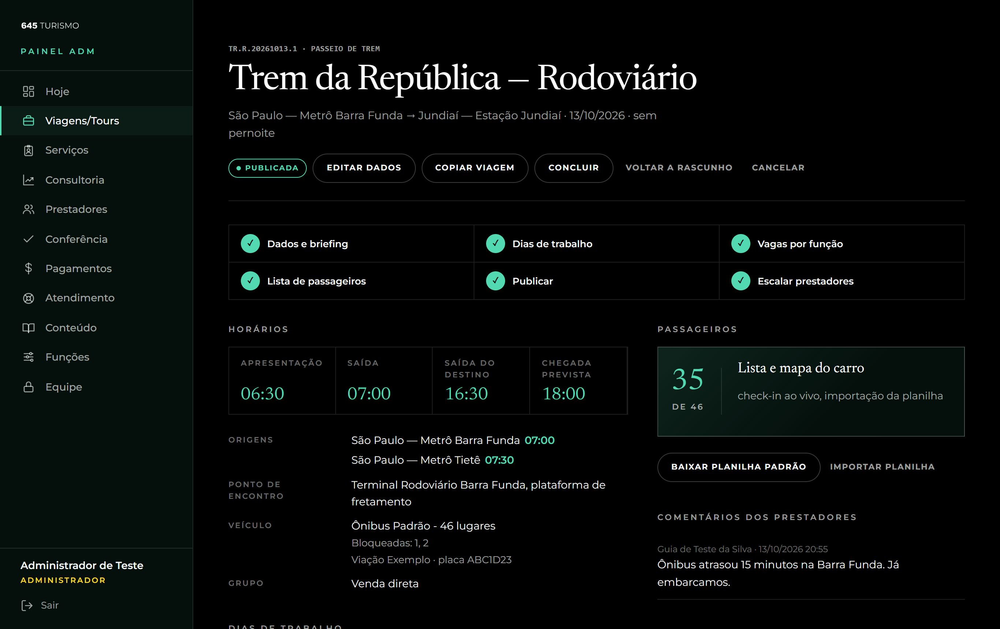
Página de uma viagem publicada
Botão
O que faz
Editar dados
Altera o cadastro (horários, veículo, origens, contatos)
Copiar
Cria outro trabalho a partir deste (capítulo 6)
Publicar
Os prestadores passam a ver o trabalho e você pode convidar
Voltar a rascunho
Esconde dos prestadores até publicar de novo
Concluir
Marca o trabalho como encerrado
Cancelar
Cancela o trabalho e todos os convites e confirmações
Na lateral ficam os Comentários dos prestadores (avisos enviados durante o trabalho, como atrasos) e os contatos. No fim da página, os Relatórios dos prestadores.
Manual do ADM
CAPÍTULO 08Dias de trabalho e vagas
Os dias dizem quando e em que horário a equipe trabalha. As vagas dizem quantas pessoas de cada função e quanto cada uma recebe.
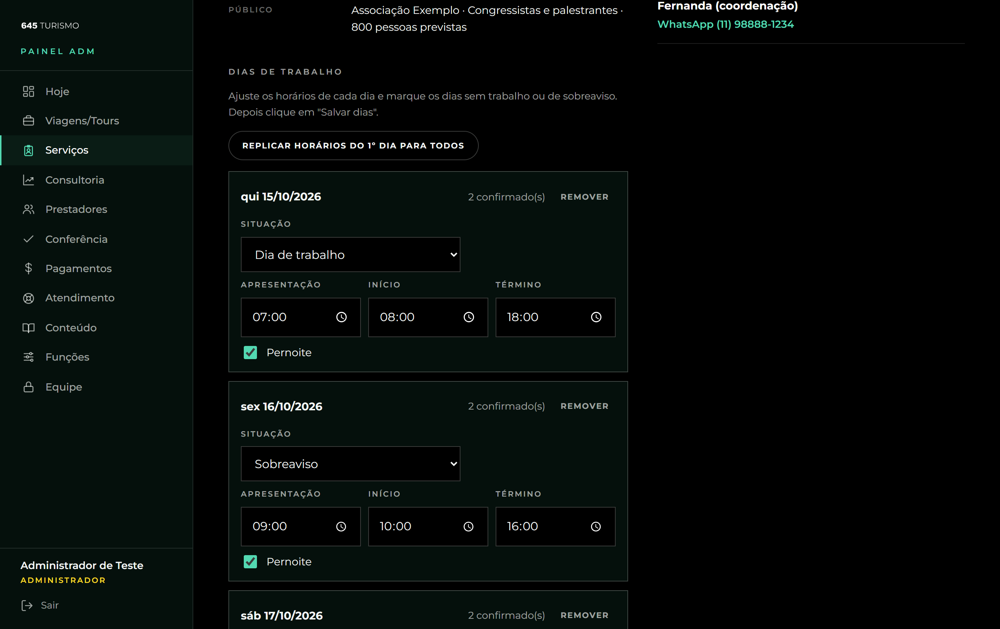
Dias de trabalho: um cartão por dia
Dias de trabalho
Cada dia tem a sua situação, os horários de apresentação, início e término e o pernoite. Altere o que precisar e clique em Salvar dias.
Replicar horários do 1º dia para todos copia os horários do primeiro dia para os outros (menos os dias sem trabalho). Depois, clique em Salvar dias.
Adicionar dia de trabalho inclui uma data nova; Remover tira um dia sem ninguém escalado.
Situação
Uso
Dia de trabalho
Dia normal
Sobreaviso
O prestador fica disponível para ser chamado; aparece com selo amarelo
Sem trabalho no dia
Dia livre dentro do período (ex.: entre dois dias de evento com pernoite); o lembrete de 12 h ignora esse dia
Valor do diaA situação do dia não muda o valor da escala: quem está escalado para o dia continua com o valor da vaga.
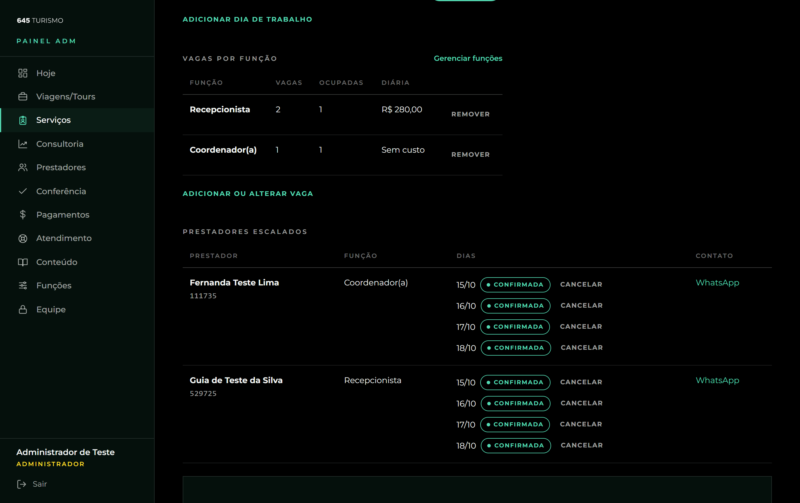
Vagas por função, com coordenação sem custo
Vagas por função
Adicionar ou alterar vaga: escolha a função, a quantidade e o valor da diária (ou o valor fechado, em serviços por empreitada). A tabela mostra vagas e ocupadas.
Sem custo: funções marcadas como "sem custo", como Coordenador(a), podem ficar sem valor. O convite avisa "sem custo" e, depois do relatório, o trabalho fica concluído sem nota nem pagamento.
Valor no conviteO prestador recebe o valor no e-mail do convite e, depois de aceitar, vê em Ganhos. Ele não aparece nas telas de vagas e convites da Área do Prestador.
Manual do ADM
CAPÍTULO 09Escalar prestadores
Com o trabalho publicado, escolha as pessoas na seção Prestadores escalados.
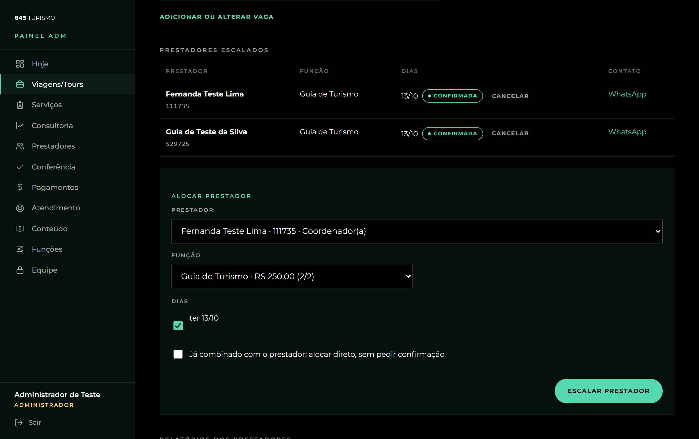
Alocar prestador
Em Prestador, escolha a pessoa. A lista mostra a situação de cada um nos dias: disponível, sem marcação, indisponível ou já escalado em outro trabalho no mesmo dia. Pré-cadastrados também aparecem.
Escolha a função (vaga) e marque os dias.
Clique em Escalar prestador. A pessoa recebe um convite por e-mail e precisa aceitar.
Já combinou? Marque "Já combinado com o prestador: alocar direto". Ele entra confirmado, sem precisar aceitar, e recebe um e-mail avisando.
A tabela mostra cada pessoa com a situação do convite por dia e o WhatsApp. Use Cancelar para tirar alguém antes do trabalho; ele é avisado por e-mail. Quem confirmou vê, no briefing, o nome e a função dos colegas em Sua equipe.
Manual do ADM
CAPÍTULO 10Lista de passageiros
Só em viagens e tours. A lista segue a planilha da 645, começa pela Poltrona e se atualiza ao vivo. No dia, você acompanha os check-ins feitos em campo.
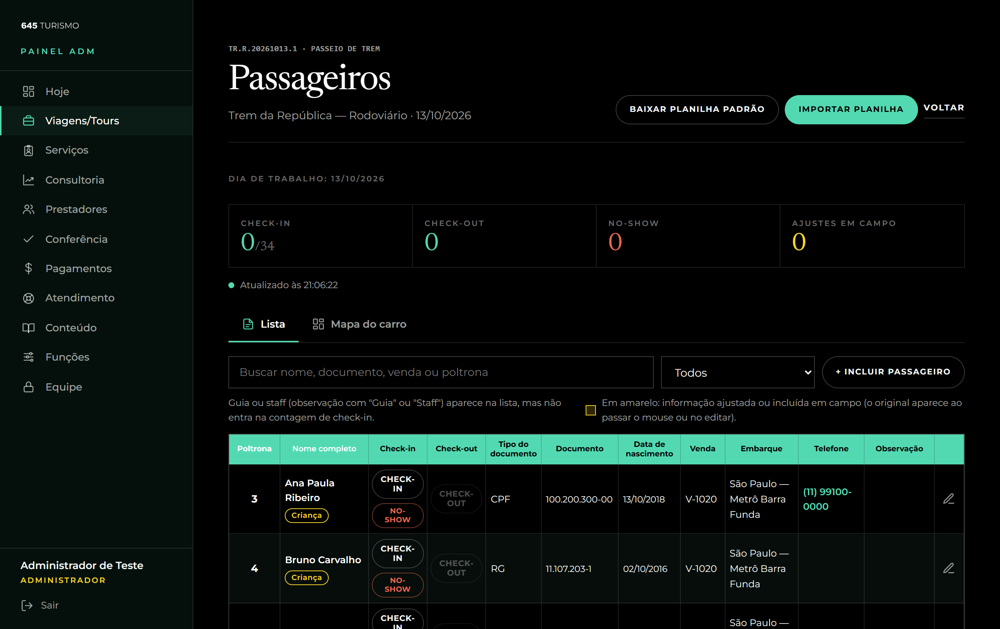
Lista de passageiros no Painel ADM
Ação
Como
Baixar planilha padrão
Botão no topo: .xlsx já numerada com as poltronas do veículo e a lista de embarques
Incluir passageiro
+ Incluir passageiro: nome, documento, nascimento, venda, embarque, poltrona, telefone, observação e tipo (adulto, criança, criança de colo ou Staff)
Editar ou remover
Ícone de lápis na linha; no formulário há Remover da lista
Ajustes em campo
Aparecem em amarelo (o original aparece ao passar o mouse). Use Incorporar ajustes de campo para torná-los oficiais
Check-in, check-out e no-show
A equipe também pode marcar, em qualquer dia
Limpar a lista
No fim da página, apaga todos os passageiros de uma vez (digite LIMPAR para confirmar), para subir uma lista nova
Regras conferidas pelo sistemaO embarque precisa ser um dos locais da viagem. A poltrona precisa existir, estar livre e não estar bloqueada. Criança de colo divide poltrona com um adulto, e Staff pode ocupar poltrona bloqueada. Staff, ou observação com "Guia" ou "Staff", fica fora da contagem de check-in.
Manual do ADM
CAPÍTULO 11Importar a planilha
Clique em Importar planilha no topo da lista. Aceita .xlsx ou .csv, ou linhas coladas do Excel.
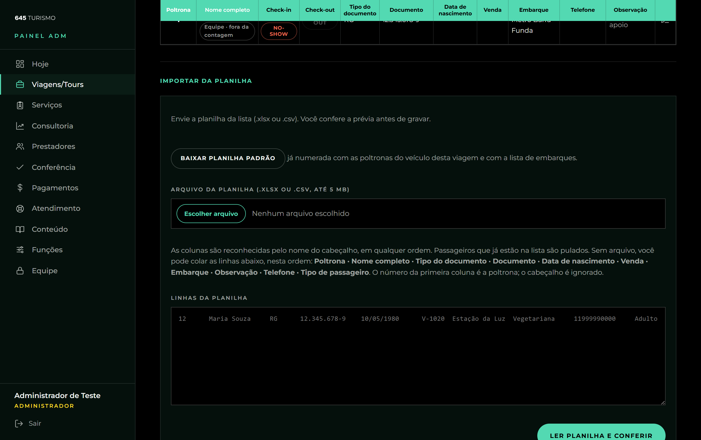
Importar da planilha
Envie a planilha (até 5 MB) ou cole as linhas. Se precisar, use Baixar planilha padrão.
Clique em Ler planilha e conferir. As colunas são reconhecidas pelo nome do cabeçalho, em qualquer ordem. Uma coluna sem título só com números de poltrona também é reconhecida como Poltrona.
Confira a prévia: quantos vão entrar, quantos já estão na lista e as linhas ignoradas.
Para trocar a lista inteira, marque Substituir a lista atual. Clique em Importar. Nada é gravado antes disso.
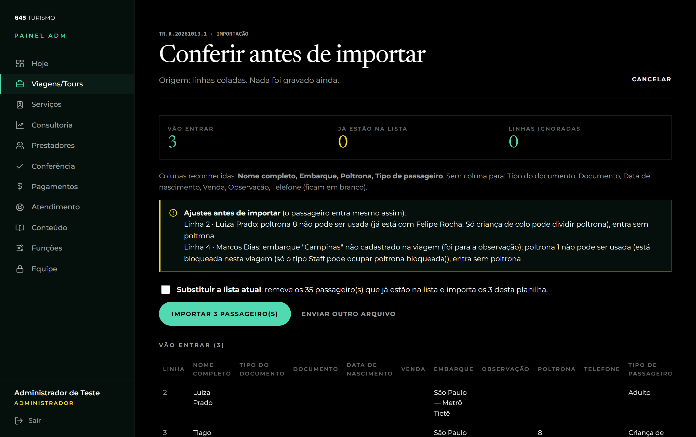
Prévia com ajustes antes de importar
A prévia avisa e ajusta o que não segue as regras, sem perder o passageiro:
Embarque fora da viagem fica em branco e o texto original vai para a observação.
Poltrona bloqueada, inexistente ou ocupada fica em branco para você escolher outra.
Tipo de passageiro é reconhecido por nomes como Adulto, Criança, Criança de colo, Staff, ADT, CHD e INF. Quem tem "Guia" ou "Staff" na observação entra como Staff.
Manual do ADM
CAPÍTULO 12Prestadores: triagem e ficha
Em Prestadores ficam os cadastros novos para aprovar e o banco de guias, recepcionistas, comissários(as) e demais funções, com filtros por função e idioma.
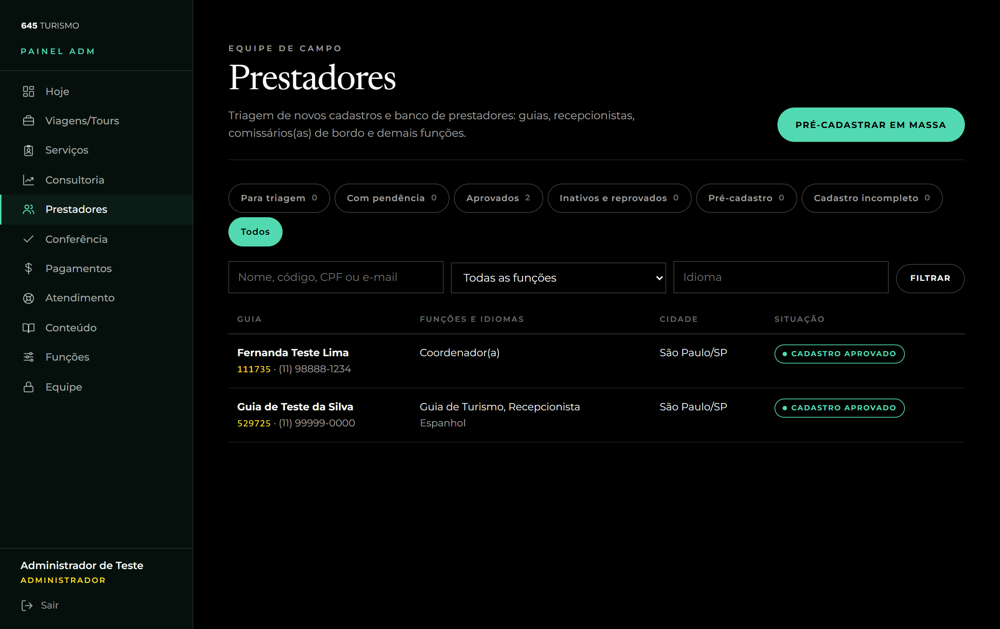
Lista de prestadores
As abas separam: para triagem, com pendência, aprovados, inativos e reprovados, pré-cadastro, cadastro incompleto e todos.
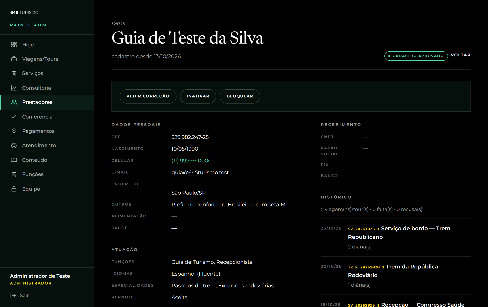
Ficha do prestador
Na ficha
Para que serve
Aprovar
Libera para receber convites; a pessoa é avisada por e-mail
Devolver ao prestador
Pede correção com o motivo; ele corrige e reenvia
Reprovar, inativar, bloquear
Encerra ou suspende o acesso
Notas internas
Observações que só a equipe vê
Reenviar acesso
Gera nova senha temporária e envia por e-mail (pré-cadastro)
Enviar link para continuar o cadastro
Para quem começou o cadastro e parou
Excluir cadastro em andamento
Apaga um cadastro incompleto para a pessoa começar de novo
Enviar link de nova senha
Manda um link para criar outra senha
A ficha mostra dados pessoais (com camiseta, restrição alimentar e saúde), atuação (funções, idiomas, Cadastur), recebimento (CNPJ ou "não emite NF" e PIX) e o histórico de trabalhos.
Manual do ADM
CAPÍTULO 13Pré-cadastro em massa
Para cadastrar várias pessoas de uma vez. Cada uma recebe por e-mail uma senha temporária, troca no primeiro acesso e completa o cadastro. Pré-cadastrados já podem ser escalados.
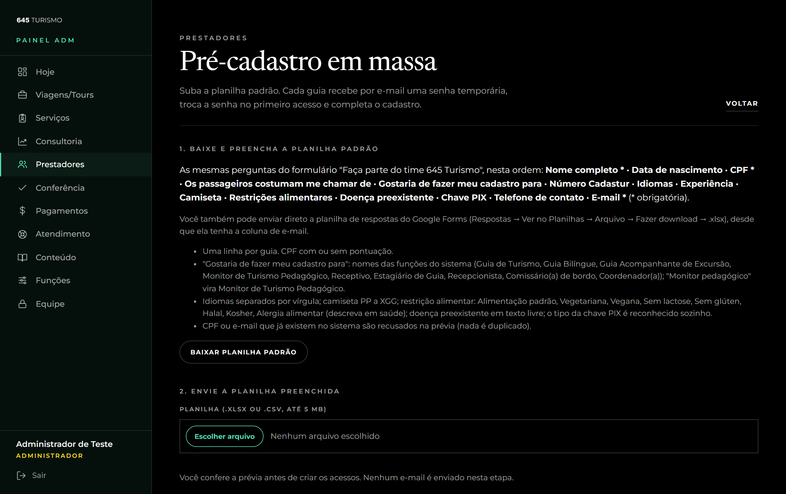
Pré-cadastro em massa
Em Prestadores, clique em Pré-cadastrar em massa e depois em Baixar planilha padrão.
Preencha uma linha por pessoa. Nome completo, CPF e E-mail são obrigatórios; as demais colunas seguem o formulário "Faça parte do time 645 Turismo" (celular, nascimento, função, camiseta, restrição alimentar, PIX...).
Envie a planilha (.xlsx ou .csv) e clique em Ler planilha e conferir.
Confira a prévia e clique em Criar e enviar.
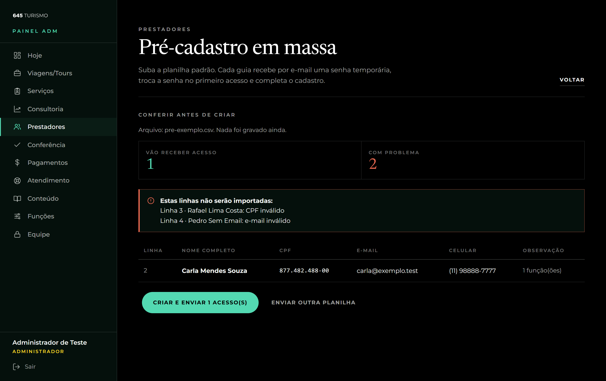
Prévia: linhas aceitas e recusadas
A prévia recusa CPF ou e-mail inválido, repetido na planilha ou já cadastrado. Nada é duplicado.
A senha temporária vale 7 dias. Se vencer, use Reenviar acesso na ficha.
A pessoa aparece na aba Pré-cadastro até completar os dados; depois vai para Para triagem.
Manual do ADM
CAPÍTULO 14Conferência
Depois do trabalho, cada prestador envia, no Pós-viagem, o relatório e a nota fiscal. A conferência libera o pagamento.
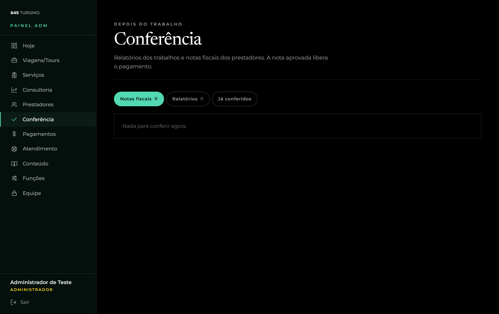
Conferência
Abas Notas fiscais, Relatórios e Já conferidos.
Abra a nota, confira número, valor e dados da empresa, e aprove ou devolva com o motivo. O prestador recebe e-mail nos dois casos.
Nota aprovada vai para Pagamentos. Quem não emite nota vai direto para lá depois do relatório. Escala sem custo termina no relatório.
Manual do ADM
CAPÍTULO 15Pagamentos
Lista o que está pronto para pagar, por prestador e trabalho, com o PIX e os dados bancários.
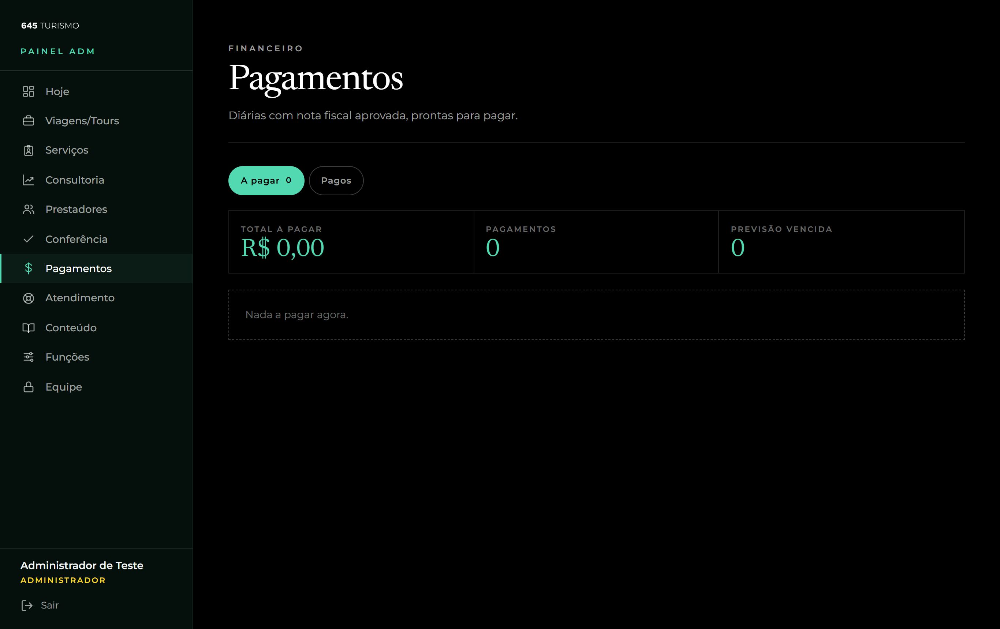
Pagamentos
Na aba A pagar, veja total, quantidade e previsões vencidas.
Faça o PIX pelo banco e registre o pagamento informando a data e anexando o comprovante.
O prestador vê o pagamento e o comprovante em Ganhos.
Use Exportar CSV para levar a lista ao banco ou à contabilidade. A aba Pagos guarda o histórico.
Manual do ADM
CAPÍTULO 16Atendimento e recados
Os chamados abertos pelos prestadores chegam aqui, com os urgentes primeiro.
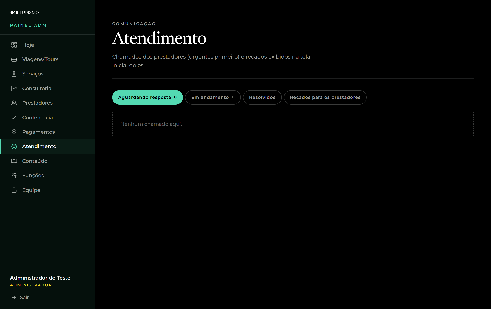
Atendimento
Abas: aguardando resposta, em andamento, resolvidos e recados para os prestadores.
Abra o chamado, responda e marque a situação. Anexos enviados pelo prestador podem ser abertos e baixados. A resposta aparece para ele em "Para resolver".
Recados: avisos na tela Hoje para todos, para uma função ou para a equipe de um trabalho.
Manual do ADM
CAPÍTULO 17Conteúdo, Funções, Equipe e Diagnóstico
Conteúdo
O que os prestadores encontram em Ajuda: perguntas frequentes, guia prático, vídeos (links do YouTube ou Vimeo) e contatos da equipe. Use Publicar, Editar, Esconder e Apagar.
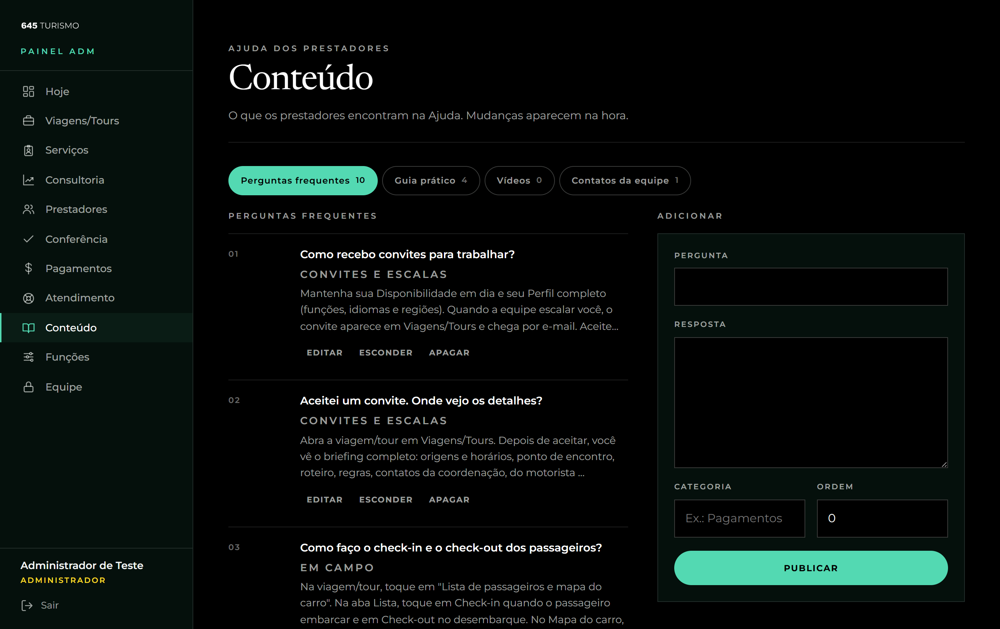
Conteúdo da Ajuda
Manual do ADM
Funções
As funções dos prestadores: Guia de Turismo, Guia Bilíngue, Estagiário de Guia, Recepcionista, Comissário(a) de bordo, Coordenador(a) e outras. Elas aparecem no cadastro e nas vagas. Marque "Exige Cadastur", "Exige idioma estrangeiro" ou "Pode ser alocada sem custo" quando for o caso.
Equipe (só Administrador)
Quem acessa o Painel ADM e com que perfil. Informe nome, e-mail e perfil e clique em Enviar convite: a pessoa recebe um link (válido por 3 dias) para criar a senha.
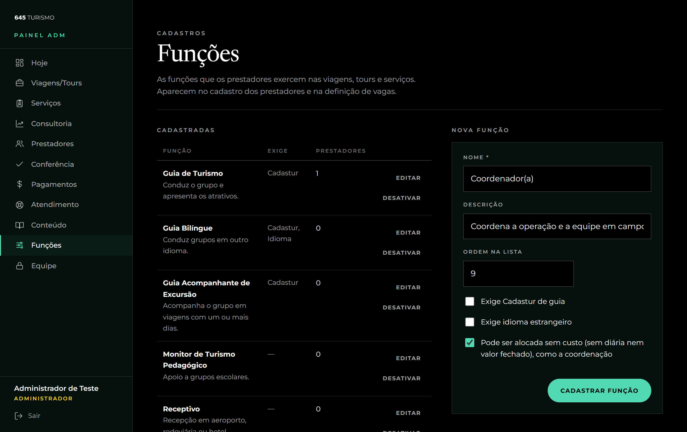
Funções
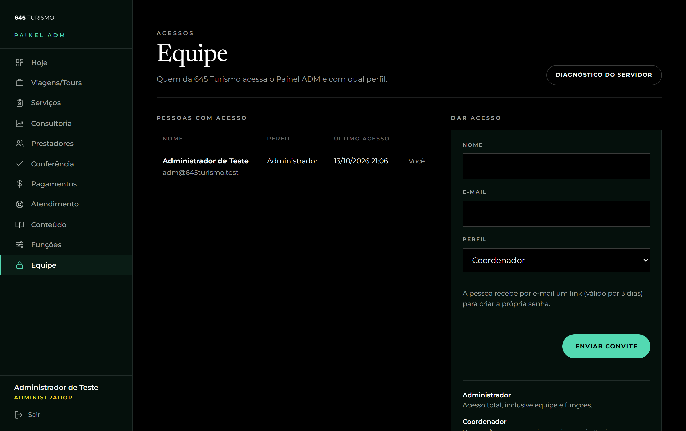
Equipe
Diagnóstico (só Administrador)
Em Equipe → Diagnóstico do servidor: atualizações do banco pendentes, pastas, últimos erros (pelo código que aparece na tela de erro), teste de envio de e-mail e o histórico dos e-mails enviados pelo sistema.
Depois de uma nova versão do sistemaAs atualizações do banco de dados são aplicadas automaticamente na publicação. Não é preciso fazer nada.